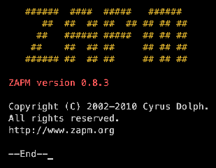
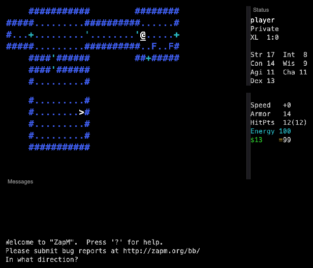
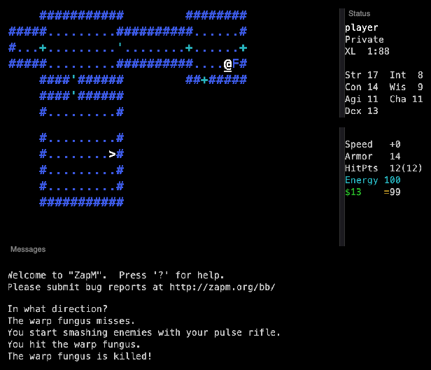
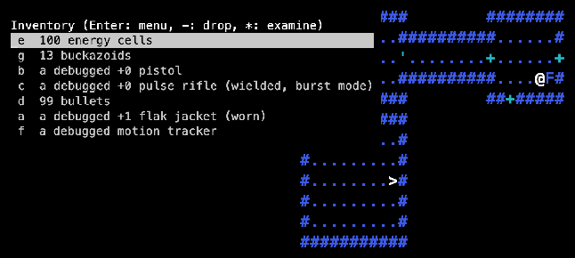

Date of birth30 May 2003 v0.1.0 · last 0.8.2, 2010
CreatorCyrus Dolph
LanguageC++ ~29,000 lines
PlatformUnix curses also Windows
Lineage
ZAPM is not a NetHack variant: Cyrus Dolph wrote new C++ code, but copied NetHack's commands, structure and jokes, with science fiction in place of fantasy. Scrolls became floppy disks, potions canisters, wands ray guns, rings bionic implants. It has one descendant, PRIME (2011). See the family tree.
Played here: ZAPM 0.8.3 from the winny- fork, compiled to WebAssembly.
Credits
Cyrus Dolph
Author (2002–2010)
winny-
0.8.3 fork on GitHub
Screenshots

Title: “Copyright (C) 2002–2010 Cyrus Dolph.”

First steps: a Space Marine on Space Base 1, warp fungi (F) around the corner.

A fight: “You start smashing enemies with your pulse rifle. … The warp fungus is killed!”

Starting kit: energy cells, buckazoids, a pistol, a pulse rifle, bullets, a flak jacket, a motion tracker.
Trivia
The guide says the game is “intended for an immature audience” and would have “gone straight to video”. (Guide)
ZAPM 0.6.3 was part of the 2008 /dev/null/nethack tournament. (RogueBasin, NetHack Wiki)
There is a fake artifact, the Bizarre Orgasmatron; using it can kill you. (Artifact.cpp)
Floppy disk software can stop with “Your license for this software has expired.” (FloppyDisk.cpp)
Money is counted in buckazoids, the currency of Space Quest. The first monster in the guide is NetHack's grid bug, which gets “derezzed”.
Each monster has a movie quote in lore.txt, from Dark Star to Flash Gordon.
What's unique
NetHack in space: the same keys, but every item class is redone as technology.
Unknown items are “buggy”, “debugged” or “optimized” instead of cursed/blessed.
Mutant powers for psions, bionic implants for everyone, skills you choose to raise.
Reusable floppy disks with licences that run out.
Lawyers who sue you, and Unix daemons as end-game monsters.
Code dive
C++ in a C style, curses and panels for the screen. About 29,000 lines, 60 source files.
The monster table MonsterData.h is generated from a spreadsheet (monsters.sxc → CSV → monsters.pl).
This port: in-memory curses routed to separate map, status, message and inventory windows; WebAssembly; auto-explore on X. Source: memmaker/zapm.
Stats
Thing
Count
Notable ones
Professions
5
Janitor, Space Marine, Psion, Quarterback, Software Engineer (a sixth, Cracker, is in the code but not offered).
Monsters
80
Tribble, flying toaster, killer tomatoes, redshirt, stormtrooper, high ping bastard, cheerleader ninja, usenet troll, lawyer, 50 foot woman, Bastard Operator From Hell, mail daemon, T-1000, agent.
ZAPM has a God Mode (`: gain level, create monster or object, reveal map, transport), but it only works when the game is started with the flags -d -g -o. This browser port does not use them. Export save / Import save keeps backups.